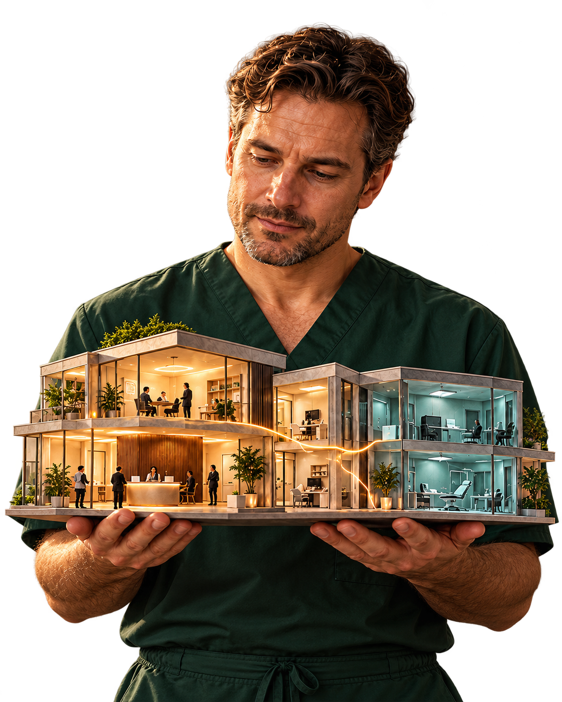
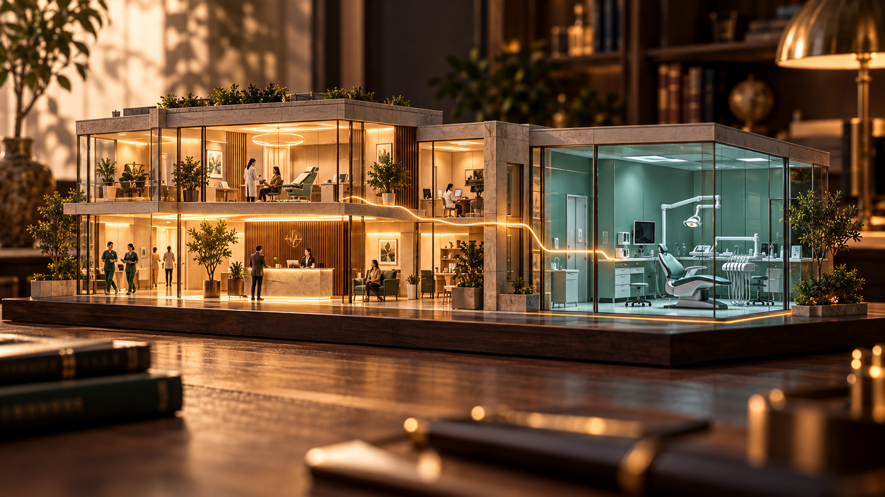
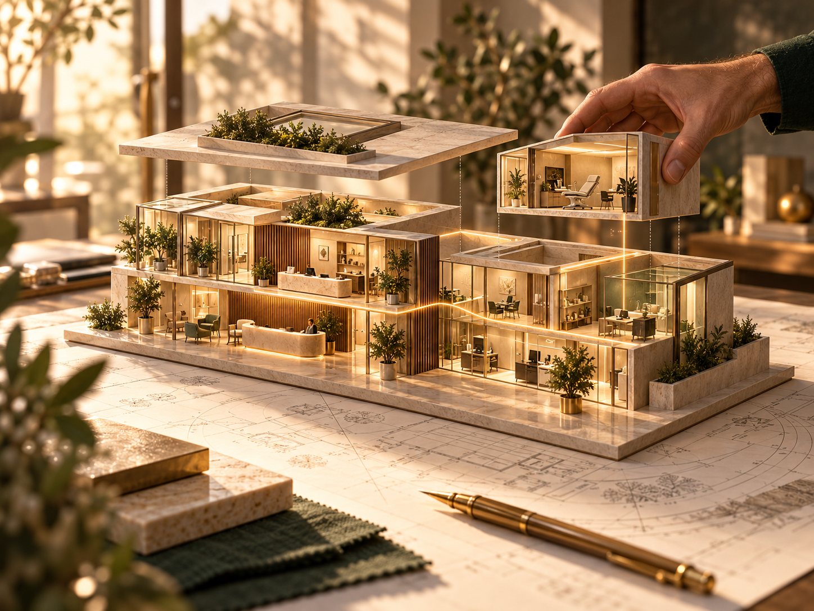

Работаем много.
А что остаётся?
Сопоставьте выручку, зарплаты врачей и остальные расходы.
ДЛЯ ВРАЧЕЙ — ВЛАДЕЛЬЦЕВ КЛИНИК
Поймите, на чём держится выручка,
где просадка и что остаётся после расходов.
Разрабатываем под вашу клинику и ваши задачи.
TEPLOFF DIGITAL · АВТОРСКИЙ ПРОЕКТ ДИАНЫ ТЕПЛОВОЙ

ЗНАКОМАЯ ИСТОРИЯ?
Здесь плотная запись. В соседнем кабинете — тишина. Врачи говорят: «Нет пациентов». А вы снова пытаетесь понять, с чего начать.
Посмотреть на клинику целиком — значит увидеть и сильные направления, и те, которым нужно внимание.

Сопоставьте выручку, зарплаты врачей и остальные расходы.
Посмотрите источники обращений и сколько первичных пациентов начали лечение.
Сравните месяцы и цели. Увидите, где рост, а где просадка.
ПОНЯТНАЯ КАРТИНА ВМЕСТО ДОГАДОК
«Пульс клиники» собирает итоги в одном месте.
Вы видите результат месяца и отклонения от своих целей.
ПРИМЕР · ВСЕ ДАННЫЕ ВЫМЫШЛЕНЫ
−165 000 ₽ к августу
Включая зарплату врачей
Выручка минус расходы
В этом примере основная выручка приходится на хирургические направления.
Месяц закончился с убытком. Посмотрите структуру расходов и динамику направлений.
Разобрать пример подробнее ↗Здесь — пример одной конфигурации. Состав вашей системы определим вместе.
ВАША КЛИНИКА — СВОЯ ЛОГИКА
У вашей клиники свои направления, команда и правила работы. Расскажите, каких ответов вам сейчас не хватает.
Под эти вопросы разработаем систему: с нужными показателями, вашими расчётами и понятным вам интерфейсом.

КАК ЭТО БУДЕТ РАБОТАТЬ У ВАС
В базовом варианте данные вносят раз в месяц. Итоги и отклонения рассчитываются по согласованным правилам.
Ваше внимание — на решениях.Под заказ возможна разработка интеграций с МИС и бухгалтерской системой для автоматической загрузки данных. Возможность, состав и периодичность обмена определим после изучения ваших программ.
Это и станет отправной точкой. До разработки обсудим структуру клиники, нужные показатели, правила расчёта и пожелания владельца к интерфейсу.
С разговора о том, что вас беспокоит. Затем согласуем состав системы и покажем макет. После разработки проверим расчёты и поможем начать работу.
ПУЛЬС КЛИНИКИ × TEPLOFF DIGITAL
Начнём с разговора об этом.
Создадим систему под вопросы, которые важны вам.